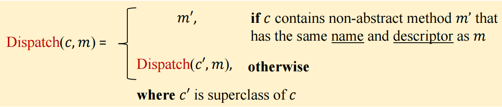
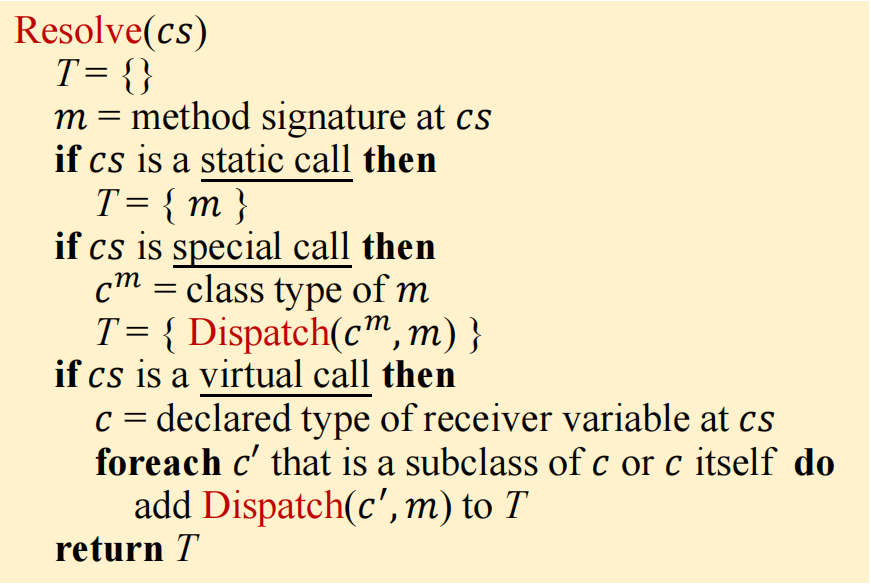
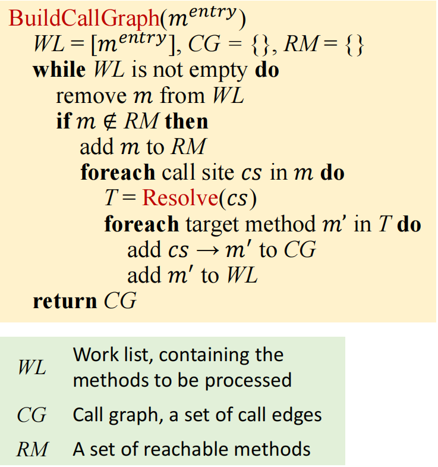

课程网站为Static Program Analysis | Tai-e
本次实验为作业 4：类层次结构分析与过程间常量传播
作业目标
-
为 Java 实现一个类层次结构分析（Class Hierarchy Analysis，CHA）。
-
实现过程间常量传播。
-
实现过程间数据流传播的 worklist 求解器。
实现
完成 CHABuilder 类
JMethod dispatch(JClass,Subsignature)
该方法实现了如下图所示的 Dispatch 方法。特别地，如果找不到满足要求的方法，返回 null。
这里要了解三个类， JMethod 、 JClass 、 Subsignature 。其中， JMethod 表示 Tai-e 中的 Java 方法，每个 JMethod 的实例关联着一个方法并包含该方法的各种信息。boolean isAbstract(): 如果该 JMethod 是一个没有方法体的抽象方法，则返回 true ，否则返回 false； JClass 表示 Tai-e 中的 Java 类，每个 JClass 的实例关联着一个类并包含该类的各种信息。JClass getSuperClass(): 返回该类的父类。如果这个类在类层次结构的顶端（没有父类），比如 java.lang.Object，则返回 null。JMethod getDeclaredMethod(Subsignature): 根据子签名返回该类中声明的对应方法。如果该类中没有该子签名对应的方法，则返回 null。boolean isInterface(): 返回该类是否是一个接口； Subsignature 表示 Tai-e 中的子签名，一个方法的子签名只包含它的方法名和方法签名的描述符，举个例子，下面方法 foo 的子签名是：“T foo(P,Q,R)” ，而它的完整签名是：“<C: T foo(P,Q,R)>”。
class C {
T foo(P p, Q q, R r) { … }
}具体实现如下：
private JMethod dispatch(JClass jclass, Subsignature subsignature) {
// TODO - finish me
// 最终找不到返回 null
if (jclass == null) return null;
// 或取当前类定义的和 subsignature 相同的 method
JMethod m = jclass.getDeclaredMethod(subsignature);
// 如果这个方法存在且为具体的方法体则返回该方法
if (m != null && !m.isAbstract()) {
return m;
} else {
// 找不到向父类去找
return dispatch(jclass.getSuperClass(), subsignature);
}Set< JMethod > resolve(Invoke)
该方法实现了如下图所示的 Resolve 方法。
这里要再了解三个类，Invoke (subclass of Stmt)、MethodRef、ClassHierarchy。Invoke 是 Stmt 的子类，表示程序中的方法调用（举个例子：x = o.m(a1,a2,…)）以及调用图中的调用点。它提供了一些 API 来获取调用点的各种信息。我需要使用 getMethodRef() 来获取目标方法的签名信息；**MethodRef **表示Tai-e 中的目标方法引用，如调用点的目标方法。它包含了调用点所调用的目标方法的签名信息。**JClass getDeclaringClass()：**返回该方法签名的声明类，即声明该方法的类；**Subsignature getSubsignature()：**返回被调用方法的子签名（subsignature）；ClassHierarchy 提供了类层次结构的相关信息，**Collection< JClass > getDirectSubclassesOf(JClass): **对于给定类，返回直接继承该类的子类。Collection< JClass > getDirectSubinterfacesOf(JClass): 对于一个给定接口，返回直接继承该接口的子接口。Collection< JClass > getDirectImplementorsOf(JClass): 对于一个给定接口，返回直接实现了该接口的类。
举个例子，在下面的 class hierarchy 中，I, II, III 是接口，其他均为类：

那么有
getDirectSubclassesOf(A) = [B]
getDirectSubinterfacesOf(I) = [II, III]
getDirectImplementorsOf(II) = [E]具体实现如下：
private Set resolve(Invoke callSite) {
// TODO - finish me
Set T = new HashSet<>();
MethodRef m = callSite.getMethodRef();
JClass c = m.getDeclaringClass();
Subsignature s = m.getSubsignature();
JMethod target = dispatch(c,s);
// 无论哪种情况都要加
T.add(target);
// 特殊情况需遍历子类和子接口
CallKind callKind = CallGraphs.getCallKind(callSite);
if(callSite.isVirtual() || callSite.isInterface()) {
// 初始化子类和子接口
ArrayDeque subclasses = new ArrayDeque<>();
HashSet set = new HashSet<>();
subclasses.addLast(c);
set.add(c);
// 遍历所有
while (!subclasses.isEmpty()) {
// 取出一个类或接口
JClass subclass = subclasses.pollFirst();
T.add(dispatch(subclass, s));
// 将该类或接口的子类和子接口加入集合
for (JClass jClass : (hierarchy.getDirectSubclassesOf(subclass))) {
if (!set.contains(jClass)) {
set.add(jClass);
subclasses.addLast(jClass);
}
}
for (JClass jClass : (hierarchy.getDirectSubinterfacesOf(subclass))) {
if (!set.contains(jClass)) {
set.add(jClass);
subclasses.addLast(jClass);
}
}
for (JClass jClass : (hierarchy.getDirectImplementorsOf(subclass))) {
if (!set.contains(jClass)) {
set.add(jClass);
subclasses.addLast(jClass);
}
}
// 将目标方法加入结果中
T.add(dispatch(subclass,s));
}
}
return T;
} CallGraph<Invoke, JMethod> buildCallGraph(JMethod)
该方法实现了如下图所示的 BuildCallGraph 方法。
这里要再了解四个类，DefaultCallGraph、CallKind、Edge<Invoke,JMethod>、Callgraphs。DefaultCallGraph 代表了程序的调用图。它提供了多样的 API（继承自类 AbstractCallGraph）来获取到调用图的信息。另外，它还提供了一些修改调用图的 API，可以借此来建立调用图。Stream< Invoke > callSitesIn(JMethod)：返回给定方法 JMethod 中的所有 call sites。boolean contains(JMethod): 返回当前调用图是否含有给定的方法，即给定方法 JMethod 在当前调用图中是否可达。boolean addReachableMethod(JMethod): 向当前调用图中添加方法 JMethod 并将方法标记成可达的。boolean addEdge(Edge<Invoke,JMethod>): 向当前调用图中添加一条调用边；CallKind 表示调用图中边的种类，包括 INTERFACE、VIRTUAL、SPECIAL 和 STATIC；Edge<Invoke,JMethod> 表示调用图中的边。每一条边从调用点（call site，Tai-e 中为 Invoke 类型）出发，指向被调用方法（callee method，类型为 JMethod）。在创建一条边的时候，你需要向构造方法提供调用类型、调用点和被调用方法的信息；Callgraphs 表示调用图的静态方法，CallKind getCallKind(Invoke invoke)：可以或取某 cs 的边类型。
private CallGraph buildCallGraph(JMethod entry) {
DefaultCallGraph callGraph = new DefaultCallGraph();
callGraph.addEntryMethod(entry);
// TODO - finish me
ArrayDeque WL = new ArrayDeque<>();
WL.addLast(entry);
// 遍历 WL
while(!WL.isEmpty()){
JMethod m = WL.pollFirst();
if(!callGraph.contains(m)){
callGraph.addReachableMethod(m);
// 遍历 cs
Stream invokeStream = callGraph.callSitesIn(m);
for(Invoke cs : invokeStream.toList()){
for (JMethod m1 : resolve(cs)) {
if (m1 != null) {
callGraph.addEdge(new Edge<>(CallGraphs.getCallKind(cs), cs, m1));
WL.addLast(m1);
}
}
}
}
}
return callGraph;
} 实现过程间常量传播
InterConstantPropagation 类包含了一个 ConstantPropagation 类的字段：cp，这使得我可以利用过程内常量传播实现的逻辑。但是ConstantPropagation.java 目前还和 A3 一样没有实现完全，所以，我首先需要补全 ConstantPropagation.java ，复制粘贴前面完成的内容即可。
- 在实现 transfer*Edge() 方法的时候，不应该修改第二个参数，也就是该边的源节点的 OUT fact。
- 可以从 IR 类中获取方法的参数，且可以使用 API JMethod.getIR() 来获取一个方法的 IR。
总的来说我要完成 InterConstantPropagation 的这些 API：
boolean transferCallNode(Stmt,CPFact,CPFact)
用来处理调用后的 fact 变化，只需复制即可，会沿着调用边做相应的处理
protected boolean transferCallNode(Stmt stmt, CPFact in, CPFact out) {
// TODO - finish me
// 会做调用的处理，所以直接将 in 复制给 out
return out.copyFrom(in);
}boolean transferNonCallNode(Stmt,CPFact,CPFact)
该方法沿用原来的即可
protected boolean transferNonCallNode(Stmt stmt, CPFact in, CPFact out) {
// TODO - finish me
return cp.transferNode(stmt, in, out);
}CPFact transferNormalEdge(NormalEdge,CPFact)
对于普通边的处理，前后是相等的
protected CPFact transferNormalEdge(NormalEdge edge, CPFact out) {
// TODO - finish me
return out;
} CPFact transferCallToReturnEdge(CallToReturnEdge,CPFact)
对于方法调用 x = m(…)，该函数会把等号左侧的变量和它的值从 fact 中kill 掉。而对于等号左侧没有变量的调用，比如 m(…)，该函数的处理方式与对待 normal edge 的一致：不修改 fact，edge transfer 是一个恒等函数。
protected CPFact transferCallToReturnEdge(CallToReturnEdge edge, CPFact out) {
// TODO - finish me
Optional v = edge.getSource().getDef();
if(v.isPresent() && v.get() instanceof Var){
// 有左值需要删掉在 fact 的左值
out.remove((Var)v.get());
}
return out;
} CPFact transferCallEdge(LocalEdge,CPFact)
将实参在调用点中的值传递给被调用函数的形参，这里要了解一个类 InvokeExp ，InvokeExp 表示程序中的方法调用表达式。它包含了被调用的方法引用和传入的各个参数。
protected CPFact transferCallEdge(CallEdge edge, CPFact callSiteOut) {
// TODO - finish me
CPFact result = new CPFact();
JMethod callee = edge.getCallee();
Stmt source = edge.getSource();
if(source instanceof Invoke invoke){
InvokeExp rValue = invoke.getRValue();
for(int i = 0; i < rValue.getArgCount(); i++)
{
Var actual = rValue.getArg(i);
result.update(callee.getIR().getParam(i), callSiteOut.get(actual));
}
}
return result;
} CPFact transferReturnEdge(LocalEdge,CPFact)
将被调用方法的返回值传递给调用点等号左侧的变量，返回值可能有多个要做相应处理
protected CPFact transferReturnEdge(ReturnEdge edge, CPFact returnOut) {
// TODO - finish me
CPFact result = returnOut.copy();
Optional def = edge.getCallSite().getDef();
if(def.isPresent()) {
LValue l = def.get();
Value value = Value.getUndef();
for(Var var : edge.getReturnVars()){
value = cp.meetValue(value,returnOut.get(var));
}
if (l instanceof Var VarL) {
result.update(VarL, value);
}
}
return result;
} 完成 InterSolver 的两个 API
过程间 worklist 求解器所使用的算法和第二次作业中实现的过程内worklist求解器的算法大体上是一样的。它们仅有两处不同：
- 在计算一个节点的 IN fact 时，过程间求解器需要对传入的 edge 和前驱们的 OUT facts 应用 edge transfer 函数（transferEdge）。
- 在初始化的过程中，过程间求解器需要初始化程序中所有的 IN/OUT fact，也就是 ICFG 的全部节点。但仅需要对 ICFG 的 entry 方法（比如 main 方法）的 entry 节点设置 boundary fact。这意味着其他方法的 entry 节点和非 entry 节点的初始 fact 是一样的。都设置为 boundary fact 即可。
上图是过程内常量分析，可以结合该图和不同之处完成。此处还需要了解的类有
void initialize()
根据不同之处2完成
private void initialize() {
// TODO - finish me
//先初始化每一个节点
for(Node node : icfg) {
result.setInFact(node,analysis.newInitialFact());
result.setOutFact(node,analysis.newInitialFact());
}
// 对于每个方法的 entry 节点设置为boundary fact
for(Method m : icfg.entryMethods().toList()){
Node n = icfg.getEntryOf(m);
result.setInFact(n,analysis.newBoundaryFact(n));
result.setOutFact(n,analysis.newBoundaryFact(n));
}
}void doSolve()
在原来的基础上根据不同处1完成
private void doSolve() {
// TODO - finish me
workList = new ArrayDeque<>();
for(Node n : icfg){
workList.add(n);
}
while(!workList.isEmpty()){
Node node = workList.remove();
// 计算 IN Fact，对传入的 edge 做 transfer
for(ICFGEdge edge : icfg.getInEdgesOf(node)){
// 对于传入的源节点 Out 做相应 edge 类型的 transfer 处理，并传给 node 的 In
analysis.meetInto(analysis.transferEdge(edge,result.getOutFact(edge.getSource())), result.getInFact(node));
}
// 这里其实有两种，但好像不用自己判断
if(analysis.transferNode(node, result.getInFact(node), result.getOutFact(node))){
for(Node n : icfg.getSuccsOf(node)){
workList.add(n);
}
}
}
} 总结
一共提交了三次，分别修改了一些小错误，以及一个大错误。一个是 transferReturnEdge 中调用的 fact 参数写错了；找了很久才发现，还有一个是因为对于 icfg 的建立过程中，并没有用队列先进先出，导致一直构建错误，可能是因为最近在看指针分析，我一直觉得顺序不重要。总之总体思路没错，写代码还是要多注意细节。